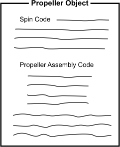
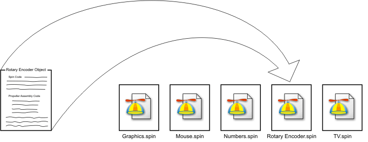
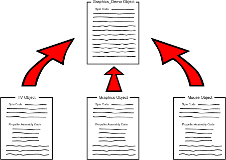
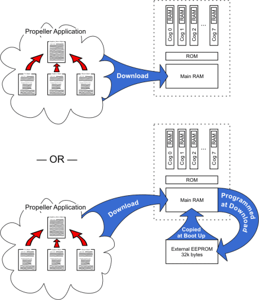

The Propeller chip’s Spin language is object-based and serves as the foundation for every Propeller Application.
Objects are just programs written in a way that:
For example, the Keyboard object and Mouse object each come with the Propeller Tool software. The Keyboard object is a program that interfaces the Propeller chip to a standard PC-style keyboard. Similarly, the Mouse object interfaces to a standard computer mouse. Both of these objects are self-contained programs with carefully designed interfaces that allow other objects, and developers, to use them easily.
By using existing objects, sophisticated applications can be built very quickly. For instance, an application can include both the Keyboard and Mouse objects, and with just a few additional lines of code, a standard user interface is realized. Since the objects are self-contained and provide a concise software interface, application developers don't necessarily need to know exactly how an object achieves its task just to be able to use it. In a similar way, a driver of a car doesn't necessarily know how the engine works, but as long as that driver understands the interface (the ignition key, gas pedal, brakes, etc.) he or she can make the car accelerate and decelerate.
Well-written objects can be created by one developer and easily used by many different applications from many different developers.
A Propeller Object consists of Spin code and, optionally, Propeller Assembly code. We’ll simply call these “objects” from now on.
Objects are stored on your computer as files with “.spin” extensions, therefore you should always think of each Spin file as an object.

Propeller Object

Object Files consist of Spin, and possibly Propeller Assembly, and are stored as “.spin” files on your computer’s hard drive.
Each object can be thought of as a “building block” for an application. An object may optionally utilize one or more other objects in order to build a more sophisticated application. This is loosely called “referencing” or “including” another object. When an object references other objects it forms a hierarchy where it is the object at the top. The topmost object is referred to as the “Top Object File” and is the starting point for compiling a Propeller Application.

Object Hierarchy
When compiled, the Graphics Demo object is the “Top Object File” that references the other three objects shown below it.
In the above figure, the Graphics Demo object references three other objects: TV, Graphics, and Mouse. If the Graphics Demo object is compiled by the user, it is considered the Top Object File and the other three objects are loaded and compiled with it resulting in a finished program called a Propeller Application, or “application” for short.
Applications are formed from one or more objects, and must include a Top Object. The Propeller Tool converts the objects into a specially compiled binary stream that consists of executable code and data and can be run by the Propeller chip.
When downloaded, the application is stored in the Propeller chip’s Main RAM and optionally into an external EEPROM. At run time, the application is executed by one or more of the Propeller chip’s processors, called cogs, as directed by the application itself.

Downloading
Applications consisting of one or more objects are downloaded to the Propeller chip’s RAM, and optionally, its external EEPROM.
Propeller Help Version 1.2
Copyright © Parallax Inc., dba Parallax Semiconductor
6/17/2011